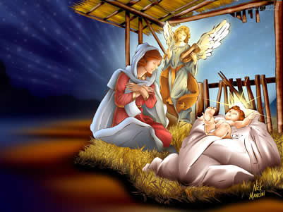

O Natal teve origem em festas pagãs que eram realizadas na antiguidade. Nessa data, os romanos celebravam a chegada do inverno (solstício de inverno). Eles cultuavam o Deus Sol (natalis invicti Solis), e ainda realizavam dias de festividades com o intuito de renovação.
